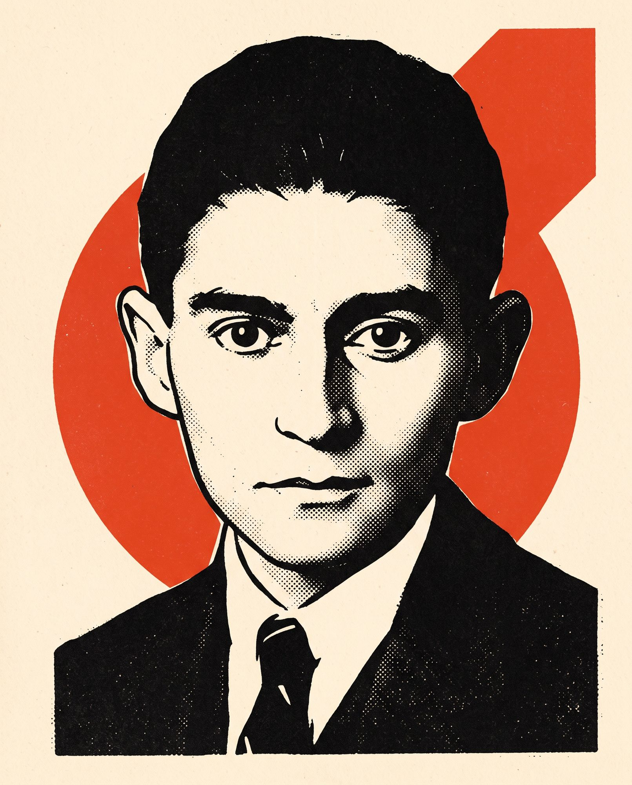

кратія
як феномен влади та управління
Що ми розглянемо
Вісім параграфів: від етимології до цифрової держави. Кожен параграф — одна теза і один автор, який її сформулював.

«Ланцюги змученого людства зроблені з канцелярського паперу».
Франц Кафка · службовець страхової компанії, Прага · автор «Процесу» і «Замку»
- § 1Поняття і походження терміна
- § 2Ідеальний тип бюрократії за Вебером
- § 3Бюрократія і легітимне панування
- § 4Бюрократія як влада: знання і невизначеність
- § 5Дисфункції: Мертон, Паркінсон, Пітер, Крозьє
- § 6Критична традиція: Маркс, Троцький, Джилас, Мізес
- § 7Бюрократія як інструмент управління
- § 8Еволюція моделей та український контекст
bureau
+ krátos
Французьке bureau «письмовий стіл, канцелярія» та грецьке κράτος «влада». Буквально: влада канцелярії. Термін приписують Венсану де Гурне, середина XVIII століття. Спершу вживався іронічно.
01 · Форма організації
Раціональна система управління на основі правил, ієрархії та документів. Нейтральне, соціологічне значення.
02 · Соціальна група
Прошарок професійних чиновників із власними інтересами, здатний протистояти і суспільству, і політикам.
03 · Дисфункція
Побутове значення: тяганина, формалізм, байдужість до людини. «Бюрократизм» як хвороба апарату.
Шість ознак ідеального типу
Ієрархія посад
Чітка вертикаль підпорядкування; кожна нижча інстанція контролюється вищою.
Розподіл компетенцій
Сфера повноважень кожної посади закріплена нормативно й не залежить від особи.
Формальні правила
Рішення ухвалюються за загальними абстрактними нормами, а не на розсуд.
Письмова документація
Управління ведеться на основі документів; канцелярія є ядром апарату.
Професіоналізм
Служба є основною діяльністю; призначення за кваліфікацією, кар'єра, фіксована платня.
Безособовість
«Без гніву та упередження»: чиновник служить посаді, а не начальнику чи клієнту.
Бюрократія — апарат
раціонально-легальної влади
Традиційне
Влада освячена звичаєм і «вічним учора». Апарат: слуги, васали, придворні; посада є особистим привілеєм.
Харизматичне
Влада на особистій відданості вождю, пророку, герою. Апарат: учні та послідовники; правил немає, є воля лідера.
Раціонально-легальне
Влада належить не особі, а нормі. Кориться закону, а не людині. Апарат такого панування і є бюрократія.
Повністю розвинена бюрократія належить до тих соціальних структур, які найважче зруйнувати. Там, де бюрократизація управління проведена до кінця, створюється форма владних відносин, яка є практично незламною.
Три джерела влади апарату
Службове знання
Чиновник знає процедуру, файли та прецеденти. Політик приходить і йде, апарат лишається. Вебер: «володар стоїть перед експертом як дилетант».
Службова таємниця
Апарат вирішує, що фіксувати, кому показувати і як формулювати. Той, хто складає протокол, визначає, що «сталося».
Зони невизначеності
Правила не покривають усе. Той, хто контролює непередбачуване, отримує реальну владу поза формальною ієрархією. Крозьє, 1963.
Чотири закони
бюрократичної патології
Зміщення мети
Дотримання правила витісняє мету, заради якої правило ухвалили. «Я діяв за інструкцією» стає виправданням будь-якого результату.
Закон Паркінсона
Робота розширюється, щоб заповнити весь відведений час. Чиновник множить підлеглих, а не суперників; штат зростає незалежно від справ.
Принцип Пітера
В ієрархії кожного підвищують до рівня його некомпетентності. Посади займають ті, хто вже не справляється.
Замкнене коло
Помилки лікують новими правилами; нові правила породжують нові зони невизначеності. «Організація, нездатна вчитися на помилках».
Апарат, що привласнює державу
Вебер бачив у бюрократії неминучу ціну раціональності. Критична традиція побачила нового господаря, який керує від імені суспільства, але у власних інтересах.
- 1843Карл Маркс. Бюрократія робить «державну мету своєю приватною метою»; вона є «уявною державою» поруч зі справжньою.
- 1936Лев Троцький. Радянська бюрократія як прошарок, що узурпував владу робітничої держави: «зраджена революція».
- 1944Людвіг фон Мізес. Ліберальна критика: бюрократія раціональна лише там, де немає ринку і прибутку як критерію. Її розростання — наслідок розростання держави.
- 1957Мілован Джилас. Партійна номенклатура є «новим класом»: колективно володіє державною власністю, не володіючи нею формально.
Чому без неї не обійтись
і чому з нею важко
Що дає апарат
- Передбачуваність: однакові справи вирішуються однаково.
- Рівність перед правилом замість залежності від прихильності.
- Масштаб: мільйони пенсій, паспортів, податків щодня.
- Неперервність: уряди змінюються, реєстри лишаються.
- Стримування свавілля: кожне рішення документоване.
Що вона забирає
- Гнучкість: нестандартний випадок не вписується в форму.
- Відповідальність: рішення «ухвалює процедура», винних немає.
- Швидкість: узгодження множаться швидше за результат.
- Прозорість: таємниця та мова форм ізолюють апарат.
- Політичний контроль: міністр залежить від тих, кого контролює.
Як намагалися приборкати апарат
Веберівська модель
Кар'єрна служба, правила, ієрархія. Держава загального добробуту будується саме цим апаратом.
New Public Management
Держава як фірма: показники, контракти, агенції, аутсорсинг, «клієнт» замість «громадянина».
Good Governance
Повернення до правил, але з прозорістю, участю громадян та оцінкою результату. Нео-веберівська держава.
Цифрова держава
Реєстри замість довідок, алгоритм замість чиновника. Нова проблема: влада того, хто пише код.
Від номенклатури
до держслужби
- IРадянська модель: апарат підпорядкований партії, а не закону; лояльність важливіша за компетенцію.
- II1990-ті: старий апарат за новими вивісками, злиття посади й бізнесу, «телефонне право».
- IIIПроблема довіри: громадянин бачить у чиновнику не слугу норми, а бар'єр, який треба обійти.
Три вектори змін
- 2015Закон «Про державну службу»: конкурси, розмежування політичних і адміністративних посад, державні секретарі.
- 2014Децентралізація: повноваження й кошти передано громадам; апарат наближено до людини.
- 2020Цифровізація: «Дія», електронні реєстри, ЦНАПи. Зникає контакт із чиновником, а з ним і поле для свавілля.
Бюрократія — не хвороба,
а форма влади
Найраціональніша форма організації влади, яку знає модерн. Її не можна скасувати, лише переналаштувати.
Джерело її влади — монополія на знання, документ і процедуру. Контроль починається з прозорості.
Дисфункції вбудовані в логіку правил: кожне правило породжує ритуал, зону невизначеності та нову інстанцію.
Відповідь одна в усі епохи: підпорядкувати апарат праву, публічності та обраній владі. Змінюються лише інструменти.
приймаються
без черги